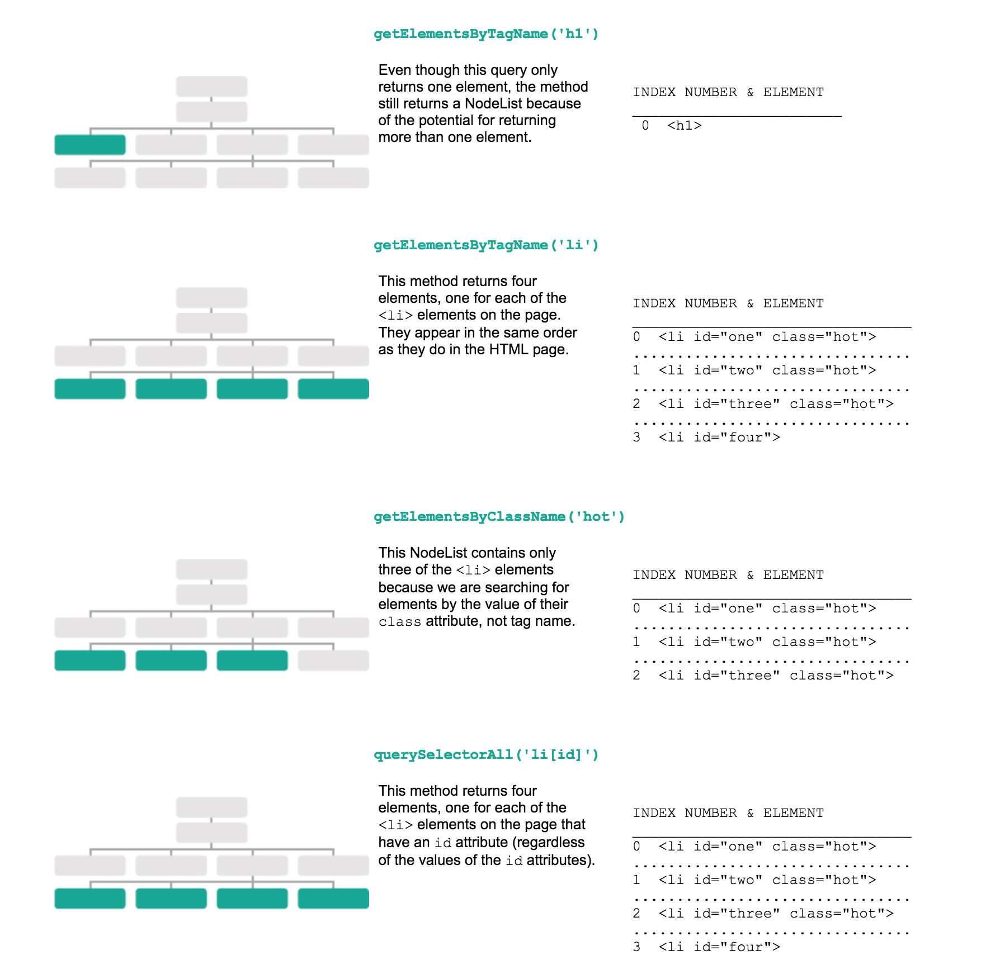

The other day we looked at returning one DOM element from a page and altering it. There are other ways of getting a lot of infomration in a page and querying that. It's called a nodelist. It's almost like a collection of nodes stored in an array. They're stored in the same order they appear on the page.
With a nodeList, you could selstc one element and alter it, or loops thorugh all and do soemthing with each of them. They're actually special tyoes of objects called collections
like the objects we just created, these have a couple different properties. length will return the number of elements in the object, while item() gived you access to an index number. However, it's more common to use square brackes like an array to access things.
live NodeLists are updated when you change elements on a page. the getElementsBy methods return live nodeLists. With this, you can reuse the same elements multiple times without having to reload them.
static NodeLists are not updated when/if you change its elements. The methods for generating static nodelists begin with querySelector.
image below taken from "javascript and jquery" by john duckett
